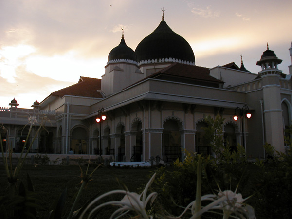

Malaysia Trav-E-Logs©
| Penang - Georgetown
|
 |
| back: Sukhothai | Kapitan Keling Mosque in the Sunset |
================================= Decided to head south because of all the heavy rain up north, and rumors that Indonesia is about to abolish the free 60-day visa-on-arrival and institute a $30/30 day system soon. If they were having problems with attracting travelers before, this will certainly devastate tourism because some places take over 30 days on average to reach from the common entry points. Took an overnight bus from Sukhothai to Bangkok, reorganized things, then continued south by train all the way to Georgetown on Penang Island, Malaysia. =================================
July 5 – 8, 2003 Being my first time to Penang, decided to climb Penang Hill after visiting the Indonesian Consulate for the latest information on travel to Indonesia. Well, not really climb Penang Hill, but bussed to the foot of the hill where for a modest fee, one can effortlessly ride a funicular railway to the top in two stages. After investigating the hill and snapping a few pictures, a well-worn, eroded path was used to descend right into a botanical garden on the other side of the hill.
Photos below: The first five photos are of the particularly attractive Hainan Chinese temple; Stitched Photo from Penang Hill; Monkeys on the Trail; Flower in the Garden.
Tomorrow I take a ferry across the Straits of Melaka to Medan, on the northern part of the island of Sumatra in Indonesia. There is much more to do and see in Malaysia, but that will have to wait for re-entry in a month or two from now.
Enjoy!
Bill
------------------
Email me at: “juno.com” preceded by an “@” and “dancer2SEAsia”
"Travel is Fatal to Bigotry, Prejudice, and Narrow-minded ness" .... attributed to Mark Twain
| jump to: Tioman Island, Malaysia | next: Beristagi, Indonesia |
| back: Sukhothai |